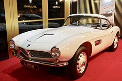
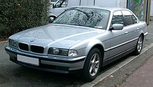
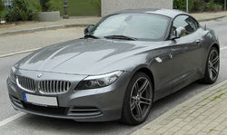
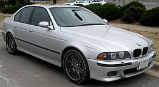
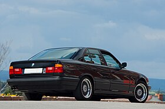

Istoria modelelor BMW
BMW 507 din 1956

BMW 507 este unul dintre cele mai iconice modele produse de BMW, lansat în 1956 și fabricat până în 1959. A fost un roadster de lux destinat pieței americane, cu un design elegant și un motor puternic.
BMW 2800 CS

BMW 2800 CS a fost un model coupé lansat în 1968, parte a seriei BMW E9. Acest model a marcat o evoluție importantă în linia BMW, combinând un design sofisticat cu performanțe remarcabile.
BMW Seria 7 (E38)

BMW Seria 7 din anul 2000 face parte din generația E38, una dintre cele mai apreciate limuzine de lux produse de BMW. Cu un design elegant, tehnologie avansată și motorizări puternice, E38 rămâne un model legendar în istoria BMW.
BMW Z4

BMW Z4 este un roadster sportiv produs de BMW, cunoscut pentru designul său elegant, performanța puternică și plăcerea pură a condusului. A fost lansat inițial în 2002 ca succesor al modelului BMW Z3.
BMW Seria 5 (E39)

BMW Seria 5 E39 este a patra generație a modelului BMW Seria 5, produs între 1995 și 2003. Acest model este cunoscut pentru combinația sa de confort, performanță și tehnologie avansată, devenind rapid un favorit în segmentul sedanurilor de lux.
BMW Seria 5 (E34)

BMW Seria 5 E34 este a treia generație a modelului Seria 5, produs între 1988 și 1996. Acest model a fost apreciat pentru echilibrul său între lux, performanță și tehnologie, devenind un favorit în segmentul sedanurilor de lux din acea perioadă.